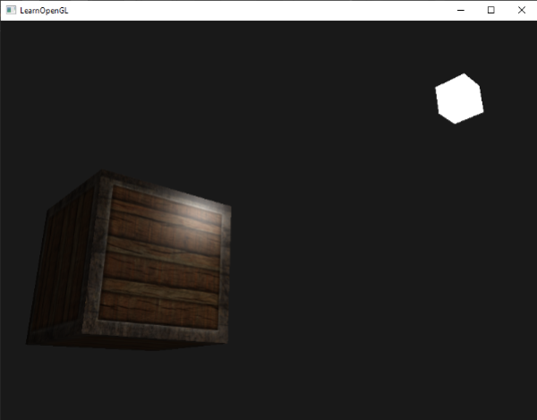
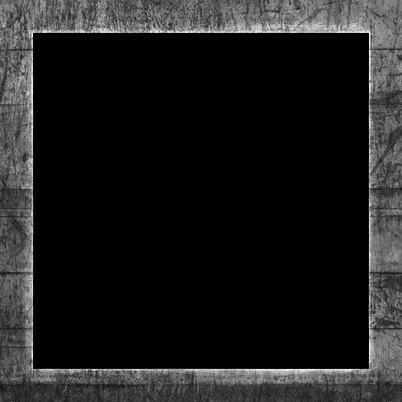
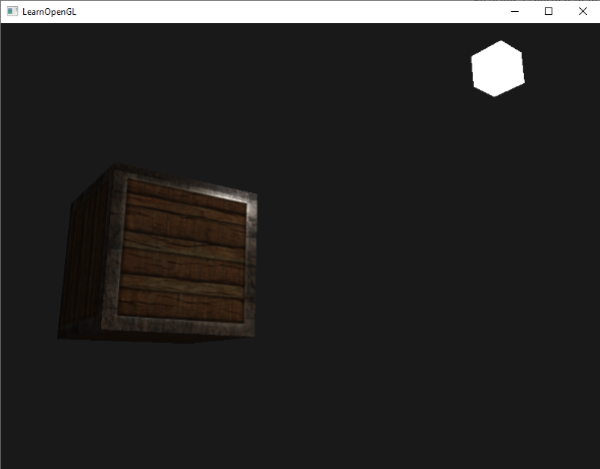

조명 맵
이전 장에서 우리는 각 물체가 빛에 다르게 반응하는 고유한 재질을 가질 수 있다는 가능성에 대해 논의했습니다. 이는 각 물체에 다른 물체와 구별되는 독특한 외관을 부여하는 데는 유용하지만, 물체의 시각적 표현에 있어서는 여전히 유연성이 부족합니다.
이전 장에서 우리는 전체 물체에 적용되는 재질을 하나의 단위로 정의했습니다. 하지만 현실 세계의 물체는 대개 하나의 재질로만 이루어져 있지 않고 여러 재질로 구성되어 있습니다. 자동차를 생각해 보세요. 외부는 광택이 나는 금속으로 되어 있고, 창문은 주변 환경을 부분적으로 반사하며, 타이어는 광택이 거의 없어 반사광이 없고, 휠은 (세차를 제대로 했다면) 매우 반짝입니다. 또한 자동차는 전체적으로 동일하지 않은 확산광과 주변광 색상을 가지고 있으며, 여러 가지 다른 주변광/확산광 색상을 보여줍니다. 요컨대, 이러한 물체는 각 부분마다 서로 다른 재질 특성을 가지고 있습니다.
이전 장에서 다룬 재질 시스템은 가장 단순한 모델을 제외한 모든 모델에 충분하지 않으므로, 확산 맵과 반사 맵을 도입하여 시스템을 확장해야 합니다. 이를 통해 객체의 확산(그리고 간접적으로 주변광 성분도 동일하게 적용되므로) 및 반사 성분을 훨씬 더 정밀하게 조절할 수 있습니다.
디퓨즈 맵(확산 맵)
우리가 원하는 것은 객체의 각 프래그먼트별로 확산 색상을 설정하는 방법입니다. 객체 상의 프래그먼트 위치에 따라 색상 값을 가져올 수 있는 시스템 같은 것이요?
이 모든 내용이 아마 익숙하게 들릴 겁니다. 저희는 이미 꽤 오랫동안 이런 시스템을 사용해 왔거든요. 이는 이전 장에서 자세히 다뤘던 텍스처와 매우 유사하며, 기본적으로는 텍스처라고 할 수 있습니다. 같은 기본 원리를 다른 이름으로 부르는 것일 뿐입니다. 즉, 객체 주위에 이미지를 감싸고, 각 프래그먼트별로 고유한 색상 값을 인덱싱하는 방식입니다. 조명이 켜진 장면에서는 일반적으로 이를 디퓨즈 맵이라고 부릅니다(PBR 이전의 3D 아티스트들이 일반적으로 부르던 방식입니다). 텍스처 이미지가 객체의 모든 확산 색상을 나타내기 때문입니다.
디퓨즈 맵을 설명하기 위해 철제 테두리가 있는 나무 컨테이너 이미지를 사용하겠습니다.

셰이더에서 디퓨즈 맵을 사용하는 방법은 텍스처 챕터에서 설명한 것과 정확히 같습니다. 다만 이번에는 텍스처를 Material 구조체 내부에 sampler2D 형태로 저장합니다. 이전에 정의했던 vec3 디퓨즈 색상 벡터를 디퓨즈 맵으로 대체합니다.
sampler2D는 소위 구조 은닉 타입(opaque type)이라는 점을 명심하십시오. 즉, 이 타입은 인스턴스화할 수 없고 유니폼(uniform)으로만 정의할 수 있습니다. 구조체를 유니폼이 아닌 다른 방식(예: 함수 매개변수)으로 인스턴스화하면 GLSL에서 이상한 오류가 발생할 수 있습니다. 따라서 이러한 불투명 타입을 포함하는 모든 구조체에 동일하게 적용됩니다.
또한 주변광 색상은 이제 빛을 이용해 주변광을 제어하므로 확산광 색상과 동일하기 때문에 주변광 재질 색상 벡터를 제거합니다. 따라서 별도로 저장할 필요가 없습니다.
struct Material {
sampler2D diffuse;
vec3 specular;
float shininess;
};
...
in vec2 TexCoords;
만약 고집스럽게 주변광 색상을 확산광 값 외의 다른 값으로 설정하고 싶다면, 주변광 벡터 3은 그대로 유지할 수 있습니다. 하지만 이렇게 하면 전체 오브젝트의 주변광 색상은 여전히 동일하게 유지됩니다. 각 프래그먼트마다 다른 주변광 값을 얻으려면 주변광 값만을 위한 별도의 텍스처를 사용해야 합니다.
참고로, 프래그먼트 셰이더에서 텍스처 좌표가 다시 필요하므로 추가 입력 변수를 선언했습니다. 그런 다음 텍스처에서 샘플링하여 프래그먼트의 확산 색상 값을 가져옵니다.
vec3 diffuse = light.diffuse * diff * vec3(texture(material.diffuse, TexCoords));
또한, 주변 재질의 색상을 확산 재질의 색상과 동일하게 설정하는 것도 잊지 마세요.
vec3 ambient = light.ambient * vec3(texture(material.diffuse, TexCoords));
디퓨즈 맵을 사용하는 방법은 이게 전부입니다. 보시다시피 새로운 기능은 아니지만 시각적 품질을 획기적으로 향상시켜 줍니다. 디퓨즈 맵을 제대로 작동시키려면 정점 데이터를 텍스처 좌표로 업데이트하고, 이를 정점 속성으로 프래그먼트 셰이더에 전달하고, 텍스처를 로드한 다음, 해당 텍스처 유닛에 바인딩해야 합니다.
업데이트된 정점 데이터는 여기에서 확인할 수 있습니다. 이제 정점 데이터에는 큐브의 각 정점에 대한 정점 위치, 법선 벡터 및 텍스처 좌표가 포함됩니다. 정점 셰이더가 텍스처 좌표를 정점 속성으로 받아들이고 이를 프래그먼트 셰이더로 전달하도록 업데이트해 보겠습니다.
#version 330 core
layout (location = 0) in vec3 aPos;
layout (location = 1) in vec3 aNormal;
layout (location = 2) in vec2 aTexCoords;
...
out vec2 TexCoords;
void main()
{
...
TexCoords = aTexCoords;
}
새로운 정점 데이터에 맞게 두 VAO의 정점 속성 포인터를 업데이트하고 컨테이너 이미지를 텍스처로 로드해야 합니다. 큐브를 렌더링하기 전에 material.diffuse 유니폼 샘플러에 올바른 텍스처 유닛을 할당하고 컨테이너 텍스처를 이 텍스처 유닛에 바인딩해야 합니다.
lightingShader.setInt("material.diffuse", 0);
...
glActiveTexture(GL_TEXTURE0);
glBindTexture(GL_TEXTURE_2D, diffuseMap);
이제 디퓨즈 맵을 사용하면 디테일이 엄청나게 향상되어 컨테이너가 정말 빛나기 시작합니다(말 그대로). 이제 컨테이너는 아마 다음과 같이 보일 것입니다.

여기에서 애플리케이션의 전체 소스 코드를 찾을 수 있습니다.
스펙큘러 맵(반사 맵)
아마도 눈치채셨겠지만, 이 오브젝트는 대부분 나무로 이루어진 컨테이너인데, 나무는 원래 저렇게 반사되는 반사광이 없기 때문에 반사 하이라이트가 조금 어색해 보입니다. 오브젝트의 반사 재질을 vec3(0.0)으로 설정하면 이 문제를 해결할 수 있지만, 그렇게 하면 컨테이너의 강철 테두리 부분도 반사 하이라이트가 사라지게 됩니다. 강철 부분은 반사 하이라이트가 나타나야 하는데 말이죠. 우리는 오브젝트의 각 부분에 반사 하이라이트를 표시하고 그 강도를 조절하고 싶습니다. 이 문제는 어디선가 들어본 것 같은데, 단순한 우연일까요? 저는 그렇게 생각하지 않습니다.
반사광만을 위한 텍스처 맵을 사용할 수도 있습니다. 즉, 객체의 각 부분의 반사 강도를 정의하는 흑백(또는 원한다면 컬러) 텍스처를 생성해야 합니다. 반사 맵의 예는 다음 이미지와 같습니다.
{kind=link}

반사광의 강도는 이미지의 각 픽셀 밝기에 따라 결정됩니다. 반사 맵의 각 픽셀은 색상 벡터로 표현할 수 있는데, 예를 들어 검은색은 vec3(0.0) 색상 벡터를, 회색은 vec3(0.5) 색상 벡터를 나타냅니다. 프래그먼트 셰이더에서는 해당 색상 값을 샘플링하고 이 값을 광원의 반사 강도와 곱합니다. 픽셀이 '흰색'에 가까울수록 곱셈 결과가 커지고, 따라서 객체의 반사광이 더 밝아집니다.
컨테이너의 대부분이 나무로 이루어져 있고, 나무 재질 자체는 반사광이 없어야 하므로, 확산 텍스처의 나무 부분 전체를 검은색으로 변환했습니다. 검은색 부분은 반사광이 전혀 없기 때문입니다. 컨테이너의 강철 테두리는 반사 강도가 다양하며, 강철 자체는 반사광에 비교적 민감한 반면 균열 부분은 그렇지 않습니다.
엄밀히 말하면 나무도 반사광을 가지고 있지만, 광택 값이 훨씬 낮고(빛 산란이 더 많음) 그 영향도 적습니다. 하지만 학습 목적상 나무는 반사광에 아무런 반응을 보이지 않는다고 가정해도 됩니다.
포토샵이나 GIMP 같은 도구를 사용하면 일부를 잘라내고 흑백으로 변환한 다음 밝기/대비를 높여 확산 텍스처를 이와 같은 반사 이미지로 비교적 쉽게 변환할 수 있습니다.
반사 맵 샘플링하기
스페큘러 맵은 다른 텍스처와 마찬가지로 디퓨즈 맵 코드와 유사합니다. 이미지를 제대로 로드하고 텍스처 객체를 생성해야 합니다. 동일한 프래그먼트 셰이더에서 다른 텍스처 샘플러를 사용하고 있으므로 스페큘러 맵에는 다른 텍스처 유닛(텍스처 참조)을 사용해야 합니다. 따라서 렌더링 전에 적절한 텍스처 유닛에 바인딩해 보겠습니다.
lightingShader.setInt("material.specular", 1);
...
glActiveTexture(GL_TEXTURE1);
glBindTexture(GL_TEXTURE_2D, specularMap);
그런 다음 프래그먼트 셰이더의 재질 속성을 업데이트하여 반사 구성 요소로 vec3 대신 sampler2D를 받도록 합니다.
struct Material {
sampler2D diffuse;
sampler2D specular;
float shininess;
};
마지막으로, 프래그먼트에 해당하는 반사광 강도를 얻기 위해 반사광 맵을 샘플링하려고 합니다.
vec3 ambient = light.ambient * vec3(texture(material.diffuse, TexCoords));
vec3 diffuse = light.diffuse * diff * vec3(texture(material.diffuse, TexCoords));
vec3 specular = light.specular * spec * vec3(texture(material.specular, TexCoords));
FragColor = vec4(ambient + diffuse + specular, 1.0);
스페큘러 맵을 사용하면 물체의 어느 부분이 광택이 있는지 매우 세밀하게 지정할 수 있으며, 해당 광택의 강도까지 조절할 수 있습니다. 스페큘러 맵은 디퓨즈 맵 위에 추가적인 조명 제어 기능을 제공합니다.
너무 흔한 방식을 피하고 싶다면, 스페큘러 맵에 실제 색상을 사용하여 각 프래그먼트의 스페큘러 강도뿐만 아니라 스페큘러 하이라이트의 색상까지 설정할 수 있습니다. 하지만 현실적으로 스페큘러 하이라이트의 색상은 대부분 광원 자체에 의해 결정되므로, 실제와 같은 시각적 효과를 구현하기는 어렵습니다 (이미지가 보통 흑백인 이유도 바로 이 때문입니다. 우리는 강도에만 관심이 있습니다).
이제 애플리케이션을 실행해 보시면 컨테이너 재질이 강철 프레임이 있는 실제 목재 컨테이너와 매우 유사해진 것을 분명히 확인할 수 있습니다.

여기에서 애플리케이션의 전체 소스 코드를 찾을 수 있습니다.
디퓨즈 맵과 스페큘러 맵을 사용하면 비교적 단순한 오브젝트에도 엄청난 디테일을 더할 수 있습니다. 노멀/범프 맵이나 리플렉션 맵 같은 다른 텍스처 맵을 사용해서 더 많은 디테일을 추가할 수도 있지만, 그건 나중에 자세히 다루도록 하겠습니다. 여러분이 만든 컨테이너를 친구와 가족에게 자랑해 보세요. 그리고 언젠가는 지금보다 훨씬 더 예뻐질 수 있다는 사실에 만족하세요!
연습 문제
- 광원의 주변광, 확산광, 반사광 벡터를 바꿔가며 컨테이너의 시각적 출력에 어떤 영향을 미치는지 살펴보세요.
- 프래그먼트 셰이더에서 스페큘러 맵의 색상 값을 반전시켜 나무 부분에는 스페큘러 하이라이트가 나타나고 강철 테두리에는 나타나지 않도록 해보세요(단, 강철 테두리의 균열 때문에 테두리에도 강도는 약하지만 약간의 스페큘러 하이라이트가 나타납니다). (해결 방법)
- 디퓨즈 텍스처에서 흑백 대신 실제 색상을 사용하여 스페큘러 맵을 생성해 보세요. 그러면 결과가 그다지 사실적으로 보이지 않을 것입니다. 직접 생성할 수 없는 경우, 이 색상이 적용된 스페큘러 맵을 사용할 수 있습니다. (결과)
- 또한, 프래그먼트별 발광 값을 저장하는 텍스처인 '발광 맵(emission map)'을 추가하세요. 발광 값은 마치 객체 자체에 광원이 있는 것처럼 객체가 발산할 수 있는 색상을 나타냅니다. 이를 통해 객체는 주변 조명 조건에 관계없이 빛을 낼 수 있습니다. 게임에서 객체가 빛을 내는 모습(예: 로봇의 눈이나 컨테이너의 조명 띠)은 대개 발광 맵을 통해 표현됩니다. 글자가 빛을 내는 것처럼 보이도록 다음 텍스처(creativesam 제작)를 컨테이너에 발광 맵으로 추가하세요. (해결 방법, 결과)
{kind=link}
{kind=link}
{kind=link}
{kind=link}
{kind=link}
{kind=link}